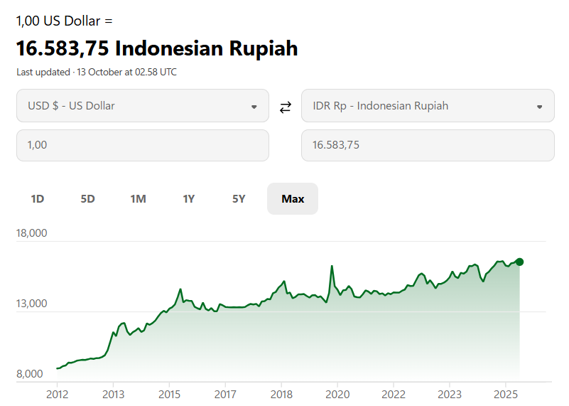

|
|
KURS RUPIAH |
Kurs USD ke Rupiah adalah nilai tukar yang menunjukkan berapa Rupiah yang dibutuhkan untuk satu Dolar Amerika Serikat (USD). Misalnya, jika kurs USD/IDR berada di angka Rp16.583,75, maka 1 USD setara dengan Rp16.583,75. Kurs ini memiliki peran penting dalam perekonomian Indonesia, memengaruhi perdagangan, investasi, hingga harga barang sehari-hari.
Berdasarkan data terkini per Oktober 2025, kurs USD/IDR bergerak di kisaran Rp16.000–Rp16.583,75, dipengaruhi oleh dinamika global dan domestik. Beberapa faktor utama yang memengaruhi fluktuasi kurs meliputi:
Jika Anda Ingin Melihat Perkembangan Kurs Secara Real-Time, Anda Bisa Mengunjungi Situs Berikut : Bank Indonesia - Informasi Kurs